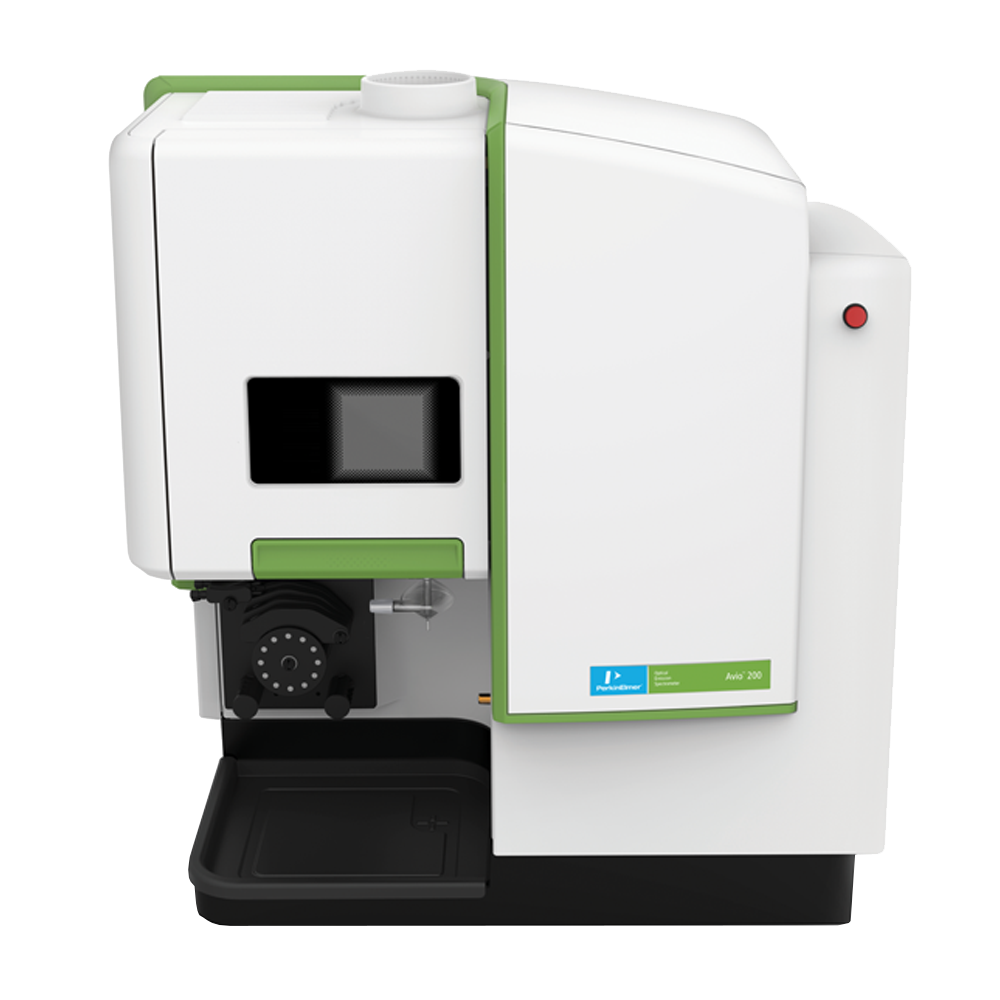

Introduction
My name is Jacob Young. I am a third year Computer Science Student (during this placement) with a minor in Mathematics from the University of Guelph. This page will document my 4 month work term (May - August, 2018) at PerkinElmer in Guelph, Ontario, Canada. It is my goal to explain the numerous ways that this work term has made me grow as both a Computer Science student and as a future employee in the workforce.
Employer Information
PerkinElmer is an American company founded in 1939. They focus in the areas of human and environmental health. This includes environmental analysis, food and consumer product safety, and life science research to name a few. The software, medical imaging components, instruments, and consumables help many end markets. Some of these markets are Animal Health, Food & Agriculture, and Therapeutic Areas. Their offices are located all over the world; including (but not limited to) the United States, Canada (30 minutes east of Waterloo and an hour west of Toronto), France, South Africa, Japan, Australia, and Brazil. Some of the slogans of the company include: “taking action to improve the health and safety of people and their environment,” and “helping meet today’s needs and tomorrow’s challenges.”
 This is an Avio 200 ICP Optical Emission Spectrometer created by PerkinElmer. It is used in research to look at different elements in high and low concentrations. More information found hereJob Description
During my 4 months at PerkinElmer, I was an associate software development engineer for the Signals™ Medical Review (referred to as SMR hereafter) program. My overall role and purpose was to help fix any bugs in the program. This was done to improve the program for the end users setting up clinical/medical studies. I had to solve both frontend and backend bugs in the application. The frontend was written in JavaScript with AngularJS while the backend was written in C# with .NET Core. When resolving bugs, I would commit the code to GitHub where another team member would do code review before the code was merged into the branch. The bugs would go through a four-step process to be fixed. First, I would fix the bug; then, test the fix on my development machine; after that, the code would be committed and then would be tested by QA when it was deployed; and finally, the bug would be marked as finished and the task closed.
Some other tasks I did while at PerkinElmer to help improve SMR include:
-stability testing to help find other bugs not originally discovered during the epic’s development
-solve the bugs that were already in the sprint, or backlog, to improve any aspect of the application
-find bugs while using the application, creating tasks in the sprint, and then solving them
-assist in researching the Angular style guide to make sure the application follows the Angular best practices and to refactor the front end correctly
-create some angular directives to move specific functionality out of the controllers
-wrote some unit tests with Jasmine and Karma to create maximum code coverage before refactoring the application
-add linting tools with ESLint to follow best style practices in the John Papa Angular Style guide
Fixing the bugs, and improving an existing application, taught me more strategies to quickly optimize web applications to be as bug free as possible. It taught me how to learn a complex codebase swiftly and efficiently, to find and diagnose the bugs quickly. I now have more experience writing bug fixes for various types of bugs.
Goals
While at PerkinElmer, my goals consisted of: relearning a programming language I had not done since high school (C#), working in a team to deliver our sprint goals every sprint, and orally communicating my ideas and what I did for the past day in the daily stand-up meetings. The tasks I was assigned, and found on my own, were very helpful in this regard. They led to working on C# code, communicating and collaborating with the team throughout the sprints, and talking to everyone about my previous day’s work, and any future work I would be doing to meet the sprint goals.
Reflecting on my goals, I was extremely successful in two out of three of them, and the last one I was mostly successful. When relearning C#, even though I had not used the language since 2014-2015, I learned how it was used for the backend code in order to fix any bugs, learn the architecture, or add some extra code. This C# implementation also used .NET Core which I had not learned in high school. This was further knowledge gained outside of school and I can now use it in the future for any jobs using a C# backend. For working in a team to deliver, I was successful with this as I had to collaborate with other team members to perform some of my tasks. These included having pull requests on GitHub, talking about the best solution to an issue, working in pairs to do some stability testing, etc. The goal that still requires some improvement is communicating in daily stand-up meetings. I felt that I was talking too fast and did not slow down to pause in my speech. This caused me to skip over some information. However, each time I am in these situations, I realize that I am improving. This is a work in progress for me.
Conclusions
PerkinElmer was a great learning experience for a third work term. They showed me another industry that I can apply my degree towards in the future; medical software. They further helped me to improve the ways I think while writing my code. I improved my coding skills in languages I was already familiar with, and some new technologies I had not used before. This work placement gave me the opportunity to truly be involved in the teamwork process of software development. I can apply what I learned at PerkinElmer to any software job I have in the future to get involved in the team’s efforts on the software/applications.
Improved Technologies (Languages, Frameworks, etc.)
- C#
- Agile Development
- Git/Github
- Linux
- CSS
- JavaScript
New Technologies (Languages, Frameworks, etc.)
- Docker
- AngularJS (Angular 1)
- .NET Core
- Spotfire
- ESLint
- Jasmine
- Karma
I also feel I have improved upon my ability to be a better team member. Through constant collaboration in the daily stand-ups between team members, and the bi-weekly sprint reviews and backlog grooming (on alternate weeks), they gave me many opportunities to improve my communication while in a team. I am extremely thankful for the chances to practice and learn new tech and soft skills to increase my appeal as an employee when I go into the workforce.
Acknowledgments
I would like to thank everyone that I worked with on this work term (in Team Canucks). Chad Millen, Mark Roy, Harold Miller-Koren, Sarah Shepherd (a University of Guelph alumni), Waliur Rahman, Sharath Sundar, Neha Goyal, Stephen Menyheart, Valerie Nespolo, Jennifer Gatti, and two fellow Guelph co-op students Kanza Shams and Michael Vamvakas were all great coworkers for my 4 months at PerkinElmer. As well as, the teams in Buffalo, New York, USA (Chippewa), and Shanghai, China (Sharks). They really helped me to improve my skills not just with coding, but my soft skills with teamwork and collaboration as well.
I would like to thank computing co-op advisors Laura Gatto and Kate McRoberts for their continued support with the computing program, with helping students work through the co-op application process, going to visit many students for the site visits, and helping with any other issues that the co-op students may have had this work term. I appreciate their commitments to the computing co-operative education program's ongoing success.
I would like to thank academic advisor Greg Klotz for taking the time to read this work report. I appreciate the amount of time it takes to read every co-op student's report.